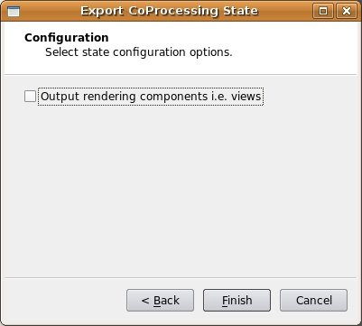
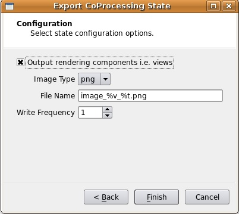

CoProcessing
Background
Several factors are driving the growth of simulations. Computational power of computer clusters is growing while the price of individual computers is decreasing. Distributed computing techniques allow hundreds or even thousands of computer nodes to participate in a single simulation. The benefit of this computational power is that simulations are getting more accurate and useful for predicting complex phenomena. The downside to this growth in computational power is that enormous amounts of data need to be saved and analyzed to determine the results of the simulation. The ability to generate data has outpaced our ability to save and analyze the data. This bottle neck is throttling our ability to benefit from our improved computing resources. Simulations save their states only very infrequently to minimize storage requirements. This coarse temporal sampling makes it difficult to notice some complex behavior. To get past this barrier, ParaView can now be easily used to integrate post-processing/visualization directly with simulation codes. This feature is called co-processing in ParaView and the difference between work flows when using co-processing can be seen in the differences below.
Technical Objectives
The main objective of the co-processing tool set is to integrate core data processing with the simulation to enable scalable data analysis while also being simple to use for the analyst. The tool set has two main parts:
An extensible and flexible co-processing library. The co-processing library was designed to be flexible enough to be embedded in various simulation codes with relative ease. This flexibility is critical, as a library that requires a lot of effort to embed cannot be successfully deployed in a large number of simulations. The co-processing library also is easily extended so that users can easily deploy new analysis and visualization techniques to existing co-processing installations.
Configuration tools for co-processing configuration. It is important for the users to be able to configure the co-processor using graphical user interfaces that are part of their daily work-flow.
Note that all of this must be done for large data. The co-processing library will almost always be run on a distributed system. For the largest simulations the visualization of extracts may also require a distributed system (i.e. a visualization cluster).
Build Directions
As mentioned above, the two components for doing co-processing are a client side plugin and a server side library. It is recommended that they be compiled separately but from the same ParaView source revision/release. This is because currently the client side configuration tools outputs python code for the server side library to use. Differing ParaView versions may have different python interfaces to objects causing simulation co-processed runs to fail.
ParaView Coprocessing Script Generator Plugin
The plugin for generating python scripts for co-processing is a client side plugin. The CMake option to turn on the script generator plugin is PARAVIEW_BUILD_PLUGIN_CoProcessingScriptGenerator. Note that since this is a client side plugin that the PARAVIEW_BUILT_QT_GUI option must be on.
CoProcessing Library
The directions for building the co-processing library can be a bit more complex. We assume that it will be built on a cluster or supercomputer. Complexities may arise from having to build mesa, use off-screen rendering, build static libraries, and/or cross-compiling. We won't go into those details here though but refer interested people to the ParaView and VTK wikis.
The additional flags that should be turned on for coprocessing include:
BUILD_SHARED_LIBS Should normally be set to ON unless you're compiling on a machine that doesn't support shared libs (e.g. IBM BG/L).
PARAVIEW_ENABLE_PYTHON Set to ON in order to use the scripts created from the coprocessing plugin. Note that of the 3.10 release that this is not required to be on though.
PARAVIEW_USE_MPI Set the ParaView server to use MPI to run in parallel. Also check that the proper version of MPI is getting used.
CMAKE_BUILD_TYPE Should be set to Release in order to optimize the ParaView code.
PARAVIEW_ENABLE_COPROCESSING The CMake option to build the coprocessing libraries.
BUILD_COPROCESSING_ADAPTORS The CMake option to turn on code that may be useful for creating the simulation code adaptor.
BUILD_FORTRAN_COPROCESSING_ADAPTORS The CMake option to turn on code that may be useful for creating an adaptor for a simulation code written in Fortran or C.
PYTHON_ENABLE_MODULE_vtkCoProcessorPython On by default.
BUILD_PYTHON_COPROCESSING_ADAPTOR Experimental code.
If ParaView was build with python enabled, the co-processing library can be tested on the installed system with the CTest command ctest -R CoProcessing. The CoProcessingTestPythonScript test does an actual coprocessing run and the CoProcessingPythonScriptGridPlot and CoProcessingPythonScriptPressurePlot test verify the output is correct. In addition, looking at the code for this test is a useful beginning point for learning to use the co-processing library.
If you are using Mesa, the following options should be used:
VTK_OPENGL_HAS_OSMESA Set to ON.
OSMESA_INCLUDE_DIR, OPENGL_xmesa_INCLUDE_DIR and OPENGL_INCLUDE_DIR Make sure this is not set to the OpenGL version of the header files.
OSMESA_LIBRARY, OPENGL_gl_LIBRARY and OPENGL_glu_LIBRARY Set these to the proper libraries.
VTK_USE_OFFSCREEN Set to ON
Running the CoProcessing Script Generator
After starting the ParaView client, go to Tools->Manage Plugins, highlight CoProcessingPlugin and click Load Selected. Alternatively, if you expect to be using this plugin often you can tell ParaView to automatically load the plugin by clicking to the left of CoProcessingPlugin to expand the list and choose the Auto Load option. This will add a CoProcessing and Writers menu to the GUI.
Once the plugin is loaded, load a simulation result into ParaView that is similar to the run you wish to do co-processing with. Normally the result will be for a discretization of the same geometry and contain the same field variables (or at least all of the field variables you wish to examine) as the simulation grid that co-processing will be performed on. The only difference between these two grids will be that the grid used for the co-processing run will be at a much higher resolution. In the picture below, a pipeline is shown for a result from a PHASTA (A CFD code led by Ken Jansen at the University of Colorado) simulation of incompressible flow through an aortic aneurysm. The simulation results include the velocity and pressure fields and was done on a grid with 235,282 cells and 45,175 points. It is important to use the same names for the field arrays as will be used in the grids the coprocessing library will be working with. The filters specify which fields to use by their name and problems will occur if the filters cannot find the correct array. The pipeline computes the vorticity, takes 20 slices through the domain, and extracts the surface of the grid.
 Once
the pipeline is set up, the writers must be added to use for the
filters that results are desired from. This is done by selecting
the appropriate writer to output the results from each desired
filter. In this example a ParallelPolyDataWriter is created for the
Slice filter and the ExtractSurface filter. For the writer for the
Slice filter we set the name of the file to be slice_%t.pvtp
where %t will get replaced with the time step each time it is
output. We also set the write frequency to be every fifth time
step. The picture below shows this.
Once
the pipeline is set up, the writers must be added to use for the
filters that results are desired from. This is done by selecting
the appropriate writer to output the results from each desired
filter. In this example a ParallelPolyDataWriter is created for the
Slice filter and the ExtractSurface filter. For the writer for the
Slice filter we set the name of the file to be slice_%t.pvtp
where %t will get replaced with the time step each time it is
output. We also set the write frequency to be every fifth time
step. The picture below shows this.
 Similarly,
we do the same for the writer for the ExtractSurface filter but we
want to use a different file name and we can set a different write
frequency if desired.
Similarly,
we do the same for the writer for the ExtractSurface filter but we
want to use a different file name and we can set a different write
frequency if desired.
Note that when we hit enter we get the error message Cannot show the data in the current view although the view reported that it can show the data. This message can be ignored and is already entered as a bug to fix in ParaView.
The final step is to go through the CoProcessing->Export State wizard to associate the grid with a name that the python script uses and specify a file name for the script. The steps are:
1. Export Co-Processing State Click Next to proceed.
2. Select Simulation Inputs Choose which grids to use by highlighting the grid and clicking Add, then click Next.
 3.
Name Simulation Inputs
Click in the boxes under Simulation Name
and change the name to what you have named the grid in your
adaptor. Our convention is to use "input" for simulations
with a single grid or multiblock data set.
3.
Name Simulation Inputs
Click in the boxes under Simulation Name
and change the name to what you have named the grid in your
adaptor. Our convention is to use "input" for simulations
with a single grid or multiblock data set.
 4.
Configuration We
usually want the full data and not just a picture of the results so
for this we leave "Output rendering components i.e. views"
unchecked and just hit Finish.
4.
Configuration We
usually want the full data and not just a picture of the results so
for this we leave "Output rendering components i.e. views"
unchecked and just hit Finish.
If we do want to output images in addition to any writers we may have specified, check "Output rendering components i.e. views" and fill in the proper information. Note that the image type is specified based on the file name extension and that %t will be replaced by the actual time step in the output file name. Additionally, if there are multiple views then %v will be replaced by the view index in the output file name.
5. Save Server State: Specify the file name the script is to be saved as.
The resulting python script should look something like:
try:
paraview.simple
except: from paraview.simple import
*
cp_writers = []
def
RequestDataDescription(datadescription):
"Callback to
populate the request for current timestep"
timestep =
datadescription.GetTimeStep()
if (timestep % 5 == 0)
or (timestep % 200 == 0) :
datadescription.GetInputDescriptionByName('input').AllFieldsOn()
datadescription.GetInputDescriptionByName('input').GenerateMeshOn()
def
DoCoProcessing(datadescription):
"Callback to do
co-processing for current timestep"
global cp_writers
cp_writers = []
timestep =
datadescription.GetTimeStep()
grid5_0_vtu =
CreateProducer( datadescription, "input" )
GradientOfUnstructuredDataSet1 = GradientOfUnstructuredDataSet(
guiName="GradientOfUnstructuredDataSet1",
ScalarArray=['POINTS', 'velocity'], ResultArray
Name='Vorticity',
ComputeVorticity=1, FasterApproximation=0 )
Slice2 =
Slice( guiName="Slice2",
SliceOffsetValues=[-10.23284210526316, -8.8684631578947375,
-7.5040842105263152, -6.1397052631578966, -4.77532631578947
43,
-3.4109473684210529, -2.0465684210526316, -0.68218947368421201,
0.68218947368420935, 2.0465684210526316, 3.4109473684210521,
4.7753263157894743, 6.139705
263157893, 7.5040842105263152,
8.8684631578947375, 10.23284210526316, 11.597221052631578,
12.961600000000001], SliceType="Plane" )
SetActiveSource(GradientOfUnstructuredDataSet1)
ExtractSurface1 = ExtractSurface( guiName="ExtractSurface1",
PieceInvariant=1 )
SetActiveSource(Slice2)
ParallelPolyDataWriter3 = CreateWriter( XMLPPolyDataWriter,
"slice_%t.pvtp", 5 )
SetActiveSource(ExtractSurface1)
ParallelPolyDataWriter2 =
CreateWriter( XMLPPolyDataWriter, "surface_%t.pvtp", 200
)
Slice2.SliceType.Origin = [-2.8049160242080688,
2.1192346811294556, 1.7417440414428711]
Slice2.SliceType.Offset = 0.0
Slice2.SliceType.Normal =
[0.0, 0.0, 1.0]
for writer in cp_writers:
if timestep % writer.cpFrequency == 0:
writer.FileName = writer.cpFileName.replace("%t",
str(timestep))
writer.UpdatePipeline()
def
CreateProducer(datadescription, gridname):
"Creates a
producer proxy for the grid"
if not
datadescription.GetInputDescriptionByName(gridname):
raise
RuntimeError, "Simulation input name '%s' does not exist"
% gridname
grid =
datadescription.GetInputDescriptionByName(gridname).GetGrid()
producer = TrivialProducer()
producer.GetClientSideObject().SetOutput(grid)
producer.UpdatePipeline()
return producer
def
CreateWriter(proxy_ctor, filename, freq):
global cp_writers
writer = proxy_ctor()
writer.FileName = filename
writer.add_attribute("cpFrequency", freq)
writer.add_attribute("cpFileName", filename)
cp_writers.append(writer)
return writer
Creating the Adaptor
The largest amount of work in getting co-processing working with a simulation code is usually creating the adaptor that can pass a VTK data set or composite data set with fields specified over it. A simple view of the program control is
By doing it like this, there is minimal modification to the simulation code (only calls to the adaptor like Initialize, Finalize, and CoProcess). The adaptor deals with the coprocessing library as well as creating VTK data structures from the simulation code as needed. The general flow for the simulation code and where it calls the adaptor would look like:
initialize coprocessor for i in number of time steps compute simulation information at time step i call coprocessing library coprocessing library determines if any coprocessing needs to be performed at time step i finalize coprocessor
The interactions between the adaptor and ParaView are mostly done through the vtkCPProcessor class. Documentation for this and the other classes in the coprocessing library are in the ParaView online documentation as well as grouped in a module. Details on the specific steps are provided below.
Initialize the Co-Processor
To initialize the co-processor, a vtkCPProcessor object must be created. This object should not be deleted until the finalization step. After creating a vtkCPProcessor object, you must call vtkCPProcessor::Initialize() to initialize the coprocessing library. The next step is to create vtkCPPipeline objects. These objects are used to represent the VTK pipelines that will be used to generate the output data. Most users will probably only use the vtkCPPythonScriptPipeline class that derives from vtkCPPipeline since that pipeline is the one that is used with the python scripts generated from the coprocessing plugin. vtkCPPythonScriptPipeline::Initialize() takes in the python script name with the full path and sets up the ParaView python interpretor.
Call the Co-Processor to Execute the Desired Filters
Most users will have a single call to the adaptor at the end of each simulation time step. This will pass in the simulation data structures to create the VTK data structures from. The created VTK data structures will be an object that derives from vtkDataObject. First though we want to check if we actually need to do any co-processing during this call. The simulation code will not know this information. Because of this, the simulation code should call the adaptor every time step. The adaptor gets the information about what data is needed for executing the vtkCPPipelines for each call. This is done in vtkCPProcessor::RequestDataDescription() by going through all of the vtkCPPipeline objects and querying them for what is needed. vtkCPProcessor::RequestDataDescription() takes in a vtkCPDataDescription object that contains information about the current simulation time and time step. The method returns 0 if no coprocessing information needs to be computed during the call and 1 otherwise. If no coprocessing needs to be performed then the adaptor should return control back to the simulation code.
If co-processing is requested then the adaptor needs to make sure that the VTK grids and fields are up to date. Upon return from vtkCPProcessor::RequestDataDescription(), the vtkCPDataDescription object will have information on what is needed by the pipelines in order to successfully execute them during this call to the adaptor. This information is stored for each co-processing input (the data objects that are given identifier names in the plugin) and accessed through the vtkCPDataDescription as vtkCPInputDataDescription objects. The vtkCPInputDataDescription objects specify whether or not they require a grid and if so which fields they require. These objects are also used to pass the VTK data objects created in the adaptor to the pipeline by using the vtkCPInputDataDescription::SetGrid() method. The final step in this call to the adaptor is then to perform the actual co-processing by calling the vtkCPProcessor::CoProcess() method.
Finalize the Co-Processor
Finalization entails calling vtkCPProcessor::Finalize() and cleaning up any remaining VTK objects by calling Delete();
While initially there may seem to be a significant hurdle to overcome in order to implement the adaptor for co-processing, the user only needs to know enough information to create the VTK data objects from their own simulation data structures. The adaptor can be made computationally efficient by taking advantage of intimate knowledge of the simulation code and knowing that VTK filters will not modify input data. Examples include:
Only creating the VTK grid in the first call to the adaptor if the grid is not changing topologically or geometrically.
Using the SetArray() method to build vtkDataArray objects that use existing memory used by the simulation code instead of allocating and copying existing memory.
Finally, we suggest looking at either the C++ coprocessing example and/or the python coprocessing example to see how the entire co-processing flow works. Additonally, the code in ParaView3/CoProcessing/CoProcessor/Testing/Cxx/PythonScriptCoProcessingExample.cxx is also worth a look. This is used to test the co-processing library and can be run with the command "ctest -R CoProcessing".